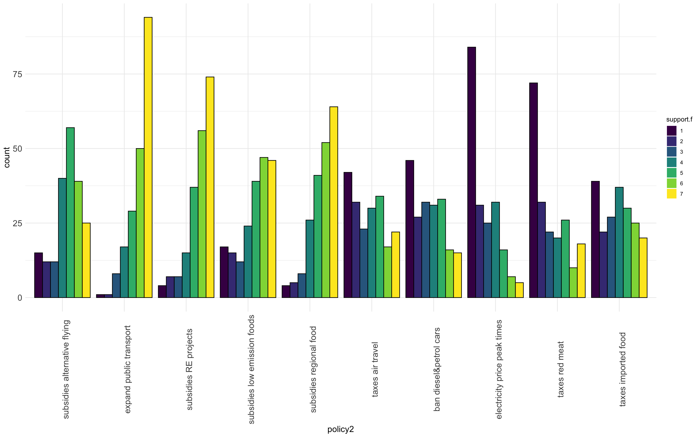
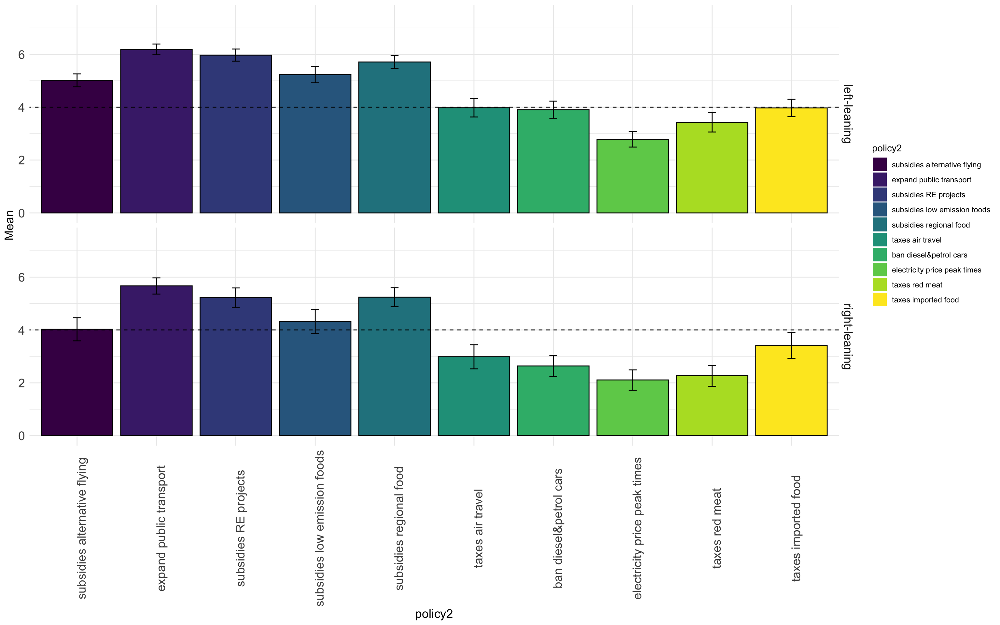
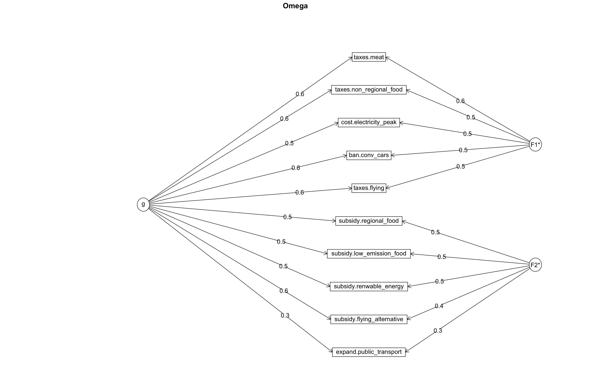
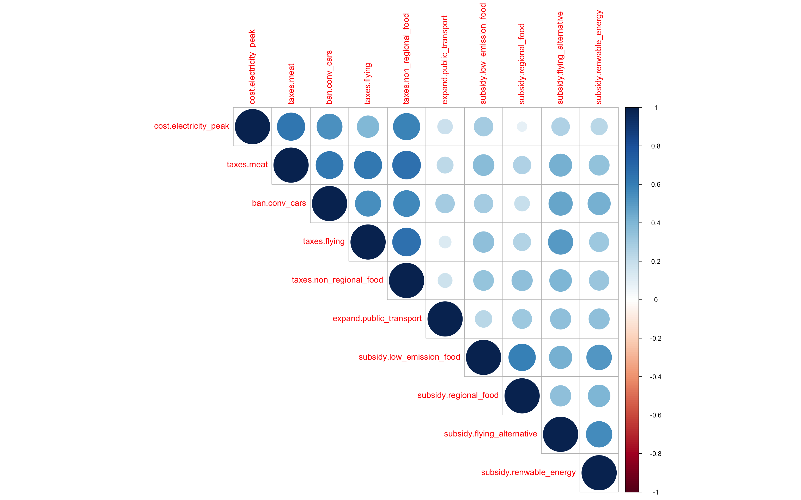
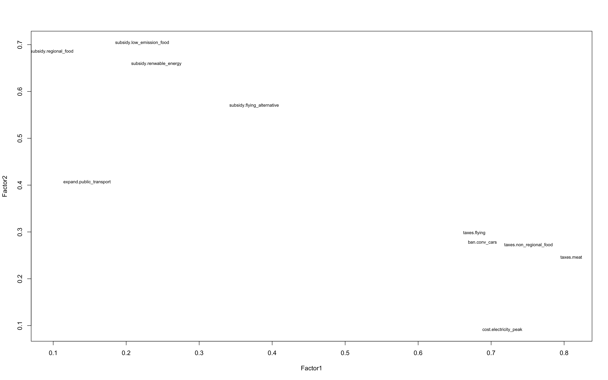
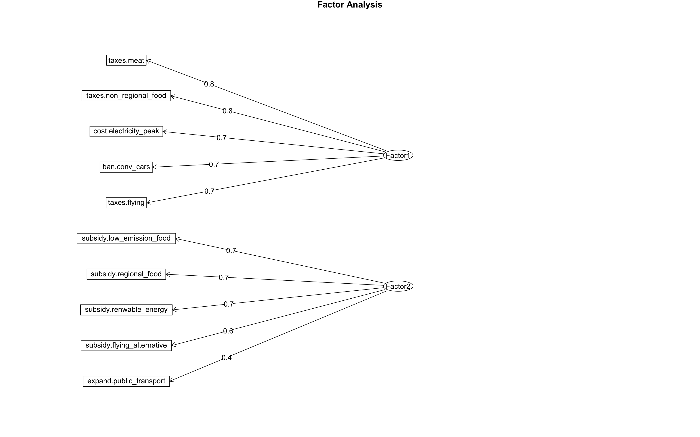

## $x
## [1] "policies"
##
## $y
## [1] "Mean support"
##
## $fill
## NULL
##
## attr(,"class")
## [1] "labels"##
## Reliability analysis
## Call: psych::alpha(x = data[c("policy_item1", "policy_item11", "policy_item3",
## "policy_item5", "policy_item8", "policy_item12", "policy_item2",
## "policy_item4", "policy_item6", "policy_item7")])
##
## raw_alpha std.alpha G6(smc) average_r S/N ase mean sd median_r
## 0.87 0.86 0.89 0.39 6.3 0.013 4.3 1.2 0.36
##
## 95% confidence boundaries
## lower alpha upper
## Feldt 0.84 0.87 0.89
## Duhachek 0.84 0.87 0.89
##
## Reliability if an item is dropped:
## raw_alpha std.alpha G6(smc) average_r S/N alpha se var.r med.r
## policy_item1 0.87 0.87 0.89 0.42 6.6 0.013 0.021 0.40
## policy_item11 0.86 0.86 0.88 0.41 6.2 0.014 0.022 0.38
## policy_item3 0.85 0.85 0.87 0.38 5.5 0.015 0.027 0.35
## policy_item5 0.86 0.85 0.88 0.39 5.7 0.014 0.026 0.36
## policy_item8 0.86 0.85 0.87 0.39 5.7 0.014 0.026 0.36
## policy_item12 0.84 0.84 0.86 0.37 5.3 0.016 0.021 0.36
## policy_item2 0.85 0.84 0.87 0.38 5.4 0.016 0.023 0.36
## policy_item4 0.85 0.85 0.87 0.38 5.5 0.016 0.021 0.36
## policy_item6 0.86 0.85 0.87 0.40 5.9 0.015 0.020 0.36
## policy_item7 0.84 0.84 0.87 0.37 5.3 0.016 0.020 0.36
##
## Item statistics
## n raw.r std.r r.cor r.drop mean sd
## policy_item1 200 0.44 0.49 0.39 0.35 6.0 1.2
## policy_item11 200 0.54 0.57 0.52 0.44 5.5 1.4
## policy_item3 200 0.70 0.71 0.67 0.61 4.6 1.7
## policy_item5 200 0.64 0.67 0.62 0.56 5.7 1.5
## policy_item8 200 0.65 0.66 0.63 0.55 4.9 1.9
## policy_item12 200 0.78 0.75 0.74 0.70 3.8 2.0
## policy_item2 200 0.75 0.74 0.71 0.67 3.4 1.9
## policy_item4 200 0.74 0.72 0.69 0.65 3.6 2.0
## policy_item6 200 0.65 0.63 0.59 0.55 2.5 1.7
## policy_item7 200 0.80 0.77 0.76 0.72 3.0 2.0
##
## Non missing response frequency for each item
## 1 2 3 4 5 6 7 miss
## policy_item1 0.00 0.00 0.04 0.09 0.14 0.25 0.47 0
## policy_item11 0.02 0.03 0.04 0.13 0.20 0.26 0.32 0
## policy_item3 0.07 0.06 0.06 0.20 0.28 0.20 0.12 0
## policy_item5 0.02 0.04 0.04 0.07 0.18 0.28 0.37 0
## policy_item8 0.09 0.07 0.06 0.12 0.20 0.23 0.23 0
## policy_item12 0.20 0.11 0.14 0.18 0.15 0.12 0.10 0
## policy_item2 0.23 0.14 0.16 0.16 0.16 0.08 0.07 0
## policy_item4 0.21 0.16 0.12 0.15 0.17 0.09 0.11 0
## policy_item6 0.42 0.16 0.12 0.16 0.08 0.04 0.03 0
## policy_item7 0.36 0.16 0.11 0.10 0.13 0.05 0.09 0## Omega_h for 1 factor is not meaningful, just omega_t## Omega
## Call: omegah(m = m, nfactors = nfactors, fm = fm, key = key, flip = flip,
## digits = digits, title = title, sl = sl, labels = labels,
## plot = plot, n.obs = n.obs, rotate = rotate, Phi = Phi, option = option,
## covar = covar)
## Alpha: 0.86
## G.6: 0.89
## Omega Hierarchical: 0.86
## Omega H asymptotic: 1
## Omega Total 0.87
##
## Schmid Leiman Factor loadings greater than 0.2
## g F1* h2 u2 p2
## expand.public_transport 0.37 0.14 0.86 1
## ban.conv_cars 0.73 0.53 0.47 1
## subsidy.flying_alternative 0.66 0.43 0.57 1
## taxes.flying 0.71 0.51 0.49 1
## subsidy.renwable_energy 0.59 0.35 0.65 1
## cost.electricity_peak 0.60 0.36 0.64 1
## taxes.meat 0.78 0.61 0.39 1
## subsidy.low_emission_food 0.58 0.34 0.66 1
## subsidy.regional_food 0.46 0.22 0.78 1
## taxes.non_regional_food 0.76 0.57 0.43 1
##
## With Sums of squares of:
## g F1*
## 4 0
##
## general/max 2.423738e+16 max/min = 1
## mean percent general = 1 with sd = 0 and cv of 0
## Explained Common Variance of the general factor = 1
##
## The degrees of freedom are 35 and the fit is 1.27
## The number of observations was 200 with Chi Square = 246.32 with prob < 1.4e-33
## The root mean square of the residuals is 0.11
## The df corrected root mean square of the residuals is 0.13
## RMSEA index = 0.174 and the 10 % confidence intervals are 0.154 0.195
## BIC = 60.88
##
## Compare this with the adequacy of just a general factor and no group factors
## The degrees of freedom for just the general factor are 35 and the fit is 1.27
## The number of observations was 200 with Chi Square = 246.32 with prob < 1.4e-33
## The root mean square of the residuals is 0.11
## The df corrected root mean square of the residuals is 0.13
##
## RMSEA index = 0.174 and the 10 % confidence intervals are 0.154 0.195
## BIC = 60.88
##
## Measures of factor score adequacy
## g F1*
## Correlation of scores with factors 0.94 0
## Multiple R square of scores with factors 0.89 0
## Minimum correlation of factor score estimates 0.77 -1
##
## Total, General and Subset omega for each subset
## g F1*
## Omega total for total scores and subscales 0.87 0.86
## Omega general for total scores and subscales 0.86 0.86
## Omega group for total scores and subscales 0.00 0.00##
## Three factors are required for identification -- general factor loadings set to be equal.
## Proceed with caution.
## Think about redoing the analysis with alternative values of the 'option' setting.
## Omega
## Call: omegah(m = m, nfactors = nfactors, fm = fm, key = key, flip = flip,
## digits = digits, title = title, sl = sl, labels = labels,
## plot = plot, n.obs = n.obs, rotate = rotate, Phi = Phi, option = option,
## covar = covar)
## Alpha: 0.86
## G.6: 0.89
## Omega Hierarchical: 0.62
## Omega H asymptotic: 0.7
## Omega Total 0.89
##
## Schmid Leiman Factor loadings greater than 0.2
## g F1* F2* h2 u2 p2
## expand.public_transport 0.33 0.29 0.19 0.81 0.57
## ban.conv_cars 0.58 0.47 0.56 0.44 0.59
## subsidy.flying_alternative 0.57 0.36 0.48 0.52 0.67
## taxes.flying 0.57 0.46 0.53 0.47 0.60
## subsidy.renwable_energy 0.54 0.46 0.51 0.49 0.58
## cost.electricity_peak 0.47 0.52 0.50 0.50 0.44
## taxes.meat 0.62 0.58 0.72 0.28 0.54
## subsidy.low_emission_food 0.54 0.48 0.53 0.47 0.56
## subsidy.regional_food 0.46 0.50 0.47 0.53 0.45
## taxes.non_regional_food 0.60 0.53 0.64 0.36 0.56
##
## With Sums of squares of:
## g F1* F2*
## 2.86 1.36 0.92
##
## general/max 2.1 max/min = 1.47
## mean percent general = 0.56 with sd = 0.07 and cv of 0.12
## Explained Common Variance of the general factor = 0.56
##
## The degrees of freedom are 26 and the fit is 0.57
## The number of observations was 200 with Chi Square = 110.14 with prob < 2.5e-12
## The root mean square of the residuals is 0.05
## The df corrected root mean square of the residuals is 0.07
## RMSEA index = 0.127 and the 10 % confidence intervals are 0.103 0.153
## BIC = -27.61
##
## Compare this with the adequacy of just a general factor and no group factors
## The degrees of freedom for just the general factor are 35 and the fit is 1.59
## The number of observations was 200 with Chi Square = 309.18 with prob < 1.3e-45
## The root mean square of the residuals is 0.16
## The df corrected root mean square of the residuals is 0.19
##
## RMSEA index = 0.198 and the 10 % confidence intervals are 0.178 0.219
## BIC = 123.74
##
## Measures of factor score adequacy
## g F1* F2*
## Correlation of scores with factors 0.79 0.71 0.67
## Multiple R square of scores with factors 0.63 0.51 0.45
## Minimum correlation of factor score estimates 0.26 0.01 -0.09
##
## Total, General and Subset omega for each subset
## g F1* F2*
## Omega total for total scores and subscales 0.89 0.88 0.78
## Omega general for total scores and subscales 0.62 0.48 0.45
## Omega group for total scores and subscales 0.24 0.39 0.33

##
## Call:
## factanal(x = corr, factors = Nfacs, rotation = "varimax")
##
## Uniquenesses:
## expand.public_transport ban.conv_cars
## 0.81 0.45
## subsidy.flying_alternative taxes.flying
## 0.53 0.45
## subsidy.renwable_energy cost.electricity_peak
## 0.51 0.48
## taxes.meat subsidy.low_emission_food
## 0.28 0.45
## subsidy.regional_food taxes.non_regional_food
## 0.52 0.36
##
## Loadings:
## Factor1 Factor2
## ban.conv_cars 0.69
## taxes.flying 0.68
## cost.electricity_peak 0.72
## taxes.meat 0.81
## taxes.non_regional_food 0.75
## subsidy.flying_alternative 0.38 0.57
## subsidy.renwable_energy 0.66
## subsidy.low_emission_food 0.70
## subsidy.regional_food 0.69
## expand.public_transport 0.41
##
## Factor1 Factor2
## SS loadings 2.94 2.20
## Proportion Var 0.29 0.22
## Cumulative Var 0.29 0.51
##
## Test of the hypothesis that 2 factors are sufficient.
## The chi square statistic is 109.64 on 26 degrees of freedom.
## The p-value is 3.04e-12
## expand.public_transport ban.conv_cars
## expand.public_transport 1.5275377 0.6977889
## ban.conv_cars 0.6977889 3.6232161
## subsidy.flying_alternative 0.7301005 1.4750251
## taxes.flying 0.3126131 2.0752261
## subsidy.renwable_energy 0.6350754 1.1842211
## cost.electricity_peak 0.3872362 1.7056281
## taxes.meat 0.5627136 2.4013065
## subsidy.low_emission_food 0.5566834 1.0575879
## subsidy.regional_food 0.5581407 0.5275879
## taxes.non_regional_food 0.4146734 2.1187940
## subsidy.flying_alternative taxes.flying
## expand.public_transport 0.7301005 0.3126131
## ban.conv_cars 1.4750251 2.0752261
## subsidy.flying_alternative 2.7627889 1.6882161
## taxes.flying 1.6882161 4.0090201
## subsidy.renwable_energy 1.3517085 0.9322111
## cost.electricity_peak 0.7519095 1.3360302
## taxes.meat 1.4235678 2.5588442
## subsidy.low_emission_food 1.3476884 1.3583417
## subsidy.regional_food 0.8592211 0.7450503
## taxes.non_regional_food 1.3113568 2.5730653
## subsidy.renwable_energy cost.electricity_peak
## expand.public_transport 0.6350754 0.3872362
## ban.conv_cars 1.1842211 1.7056281
## subsidy.flying_alternative 1.3517085 0.7519095
## taxes.flying 0.9322111 1.3360302
## subsidy.renwable_energy 2.1446231 0.5721608
## cost.electricity_peak 0.5721608 2.8232161
## taxes.meat 1.0270352 2.1661307
## subsidy.low_emission_food 1.4280402 0.9480402
## subsidy.regional_food 0.8501005 0.1974372
## taxes.non_regional_food 0.9352764 1.9368844
## taxes.meat subsidy.low_emission_food
## expand.public_transport 0.5627136 0.5566834
## ban.conv_cars 2.4013065 1.0575879
## subsidy.flying_alternative 1.4235678 1.3476884
## taxes.flying 2.5588442 1.3583417
## subsidy.renwable_energy 1.0270352 1.4280402
## cost.electricity_peak 2.1661307 0.9480402
## taxes.meat 4.1305528 1.4210050
## subsidy.low_emission_food 1.4210050 3.5556784
## subsidy.regional_food 0.7742211 1.6269849
## taxes.non_regional_food 2.6106533 1.2448241
## subsidy.regional_food taxes.non_regional_food
## expand.public_transport 0.5581407 0.4146734
## ban.conv_cars 0.5275879 2.1187940
## subsidy.flying_alternative 0.8592211 1.3113568
## taxes.flying 0.7450503 2.5730653
## subsidy.renwable_energy 0.8501005 0.9352764
## cost.electricity_peak 0.1974372 1.9368844
## taxes.meat 0.7742211 2.6106533
## subsidy.low_emission_food 1.6269849 1.2448241
## subsidy.regional_food 2.0992714 1.0084422
## taxes.non_regional_food 1.0084422 3.8416080##
## Model Test User Model:
##
## Test statistic 52.257
## Degrees of freedom 34
## P-value 0.023
##
## User Model versus Baseline Model:
##
## Comparative Fit Index (CFI) 0.987
## Bentler-Bonett Normed Fit Index (NFI) 0.965
##
## Root Mean Square Error of Approximation:
##
## RMSEA 0.052